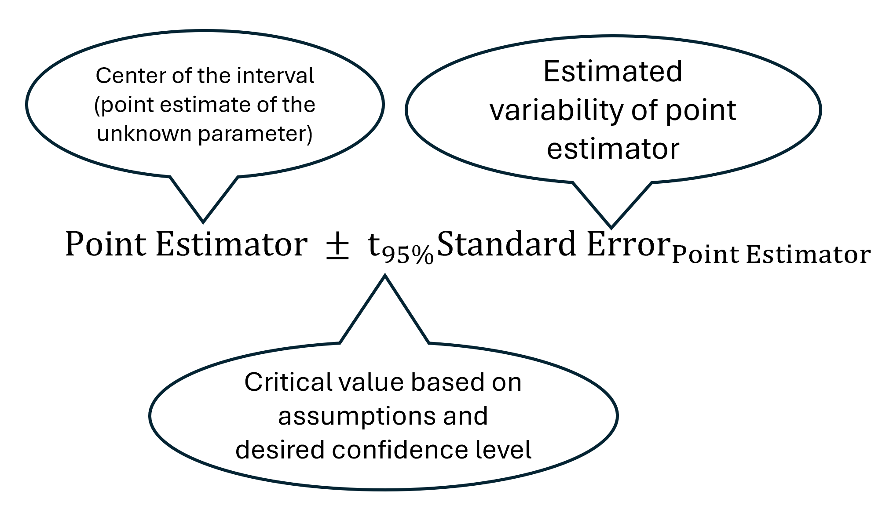

The Gaussing Game
The confidence interval is one of the simplest and most useful tools in statistics. Every day, Fred thinks about a new unknown number he wants to estimate. He takes a random sample relevant to that number and computes a 95% confidence interval for it.
Given only the information provided by the data, Fred will always choose that the parameter is in the interval. Fred can never know whether he is exactly right or wrong each time he makes this decision, but now you can! Is Fred right today? Make a choice and find out.
Loading today’s puzzle…
Confidence Interval Illustration

A 95% confidence interval is a statistical method (from sampling to computation) that is designed (under some assumptions ) to use data to capture an unknown parameter 95% of the time that it is employed.
About Confidence Intervals
(Add your explanation here. You can include diagrams, examples, or a visual demonstration of how confidence intervals behave across repeated samples.)